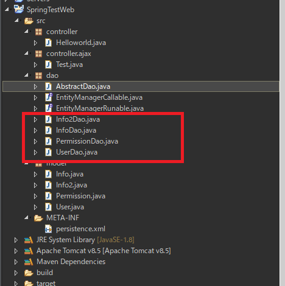
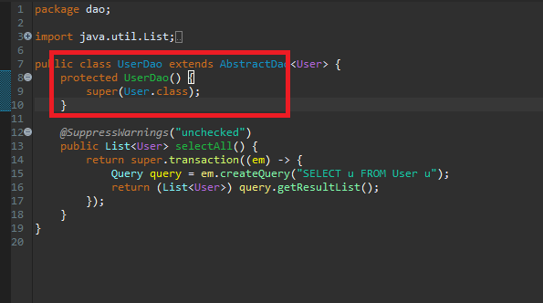
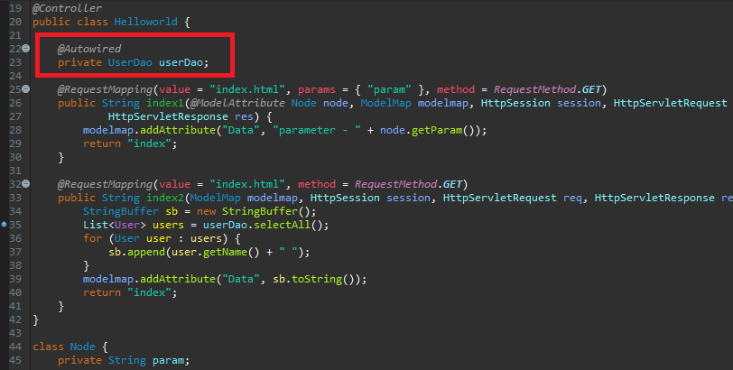
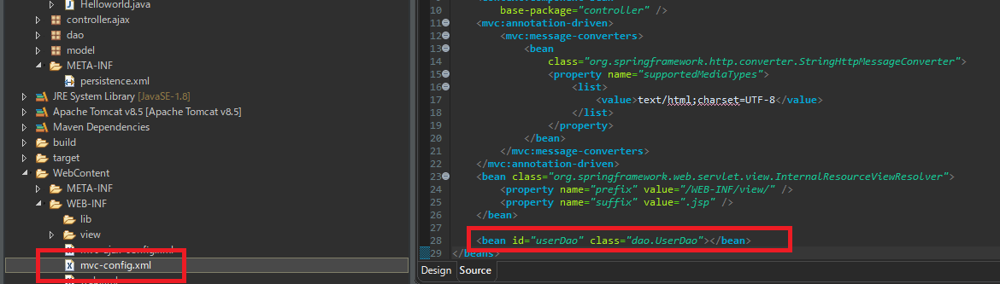
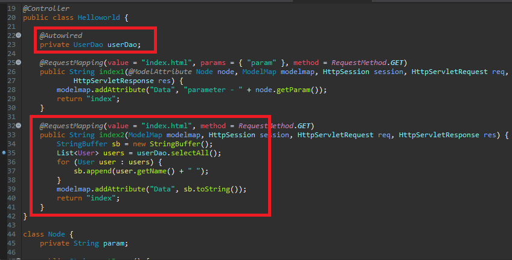
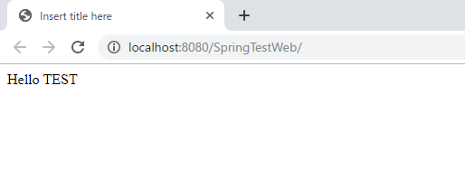
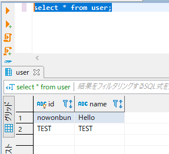

[Java] JPAのSpring frameworkで依存性注入する方法
こんにちは。明月です。
このページでは「JPA」の「Spring framework」で「DI(依存性注入)」に関して調べてみました。
前述で「Spring framework」設定する方法と「JPA」で「DAO」を作成する方法に関して説明しました。
link - [Java スタディ - 35] EclipseでSpring web frameworkを利用してウェブサービスプロジェクトを立ち上がる方法
link - [Java スタディ - 46] JPAでDAOを生成する方法
前述で作成したDaoを確認しましょう。

そして「Dao」クラスを同じパッケージ以外では「new」で割当てられないようにクラスのコンストラクタを「protected」に作成しましょう。
なぜなら、「new」でインスタンスを生成が可能ならDI(依存性注入)が意味がなくなります。でも「private」ではなく、「protected」で作ることは「Dao」クラスを継承を可能にして拡張ができるようにしましょう。

そしてメインページの「Helloworld」クラスでメンバー変数で使う「Dao」を宣言してアノテーションの「@Autowired」を作成しましょう。

上のメンバー変数にDI(依存性注入)によって自動にインスタンスが生成されます。
その設定を当該なコントローラ設定ファイル(mvc-config.xml)で「bean」を追加します。その後、メンバー変数名と「id」名を一致します。そして追加するインスタンスクラスをパッケージ名含めて作成します。

そして「Helloworld」の「index.html」で「user」テーブルからデータを持ち来ます。

その後、プログラムを起動してデータが出力するかを確認しましょう。


この依存性注入は毎度「UserDao」を使うたびにインスタンスを生成することではなく、シングルトンかつ「flyweight」パターン式でシステムの中で一回に生成するとずっと再使用する形です。
なのでシングルトンの良い点と拡張性を持っている「DI」(依存性注入)の特徴です。
link - https://www.tutorialspoint.com/spring/spring_autowired_annotation
添付 -  SpringTestWeb.zip
SpringTestWeb.zip
- [Java] Java servletでインスタンスを初期する方法2019/10/17 07:15:48
- [Java] Spring web frameworkで発生する文字化けのEncoding設定2019/10/16 07:32:55
- [Java] Web Spring frameworkでfilter設定2019/10/15 20:12:35
- [Java] Web serviceのweb.xmlでエラーページ設定2019/10/14 20:13:44
- [Java] JPAのDAOをFactoryパターンで管理する方法2019/10/13 22:55:52
- [Java] JPAのSpring frameworkで依存性注入する方法2019/10/13 00:40:08
- [Java] JPAでDAOを生成する方法2019/10/11 07:30:14
- [Java] JPAでトランザクションの使用方法とオブサーバーパターンで共通トランザクション関数を作り方2019/10/10 07:29:43
- [Java] JPAのQuery を作り方2019/10/09 07:34:08
- [Java] JPAのEntityクラス設定(Cascade, fetch)2019/10/08 07:43:33
- [Java] JPAでpersistance.xml設定とentityクラス設定(@GeneratedValue設定)2019/10/07 07:38:13
- [Java] EclipseでJPAフレームワーク設定する方法2019/10/04 19:24:43
- [Java] Web spring frameworkのJSPで使う言語 JSTL - XML2019/10/03 20:02:06
- [Java] Web spring frameworkのJSPで使う言語 JSTL - 関数、データベース2019/10/02 21:00:22
- [Java] Web spring frameworkのJSPで使う言語 JSTL - コアー、フォーマッティング2019/10/01 21:48:08
- [Java] Spring環境でファイルアップロード(プログレスバーでファイルアップロード状態を表示する方法)する方法2020/03/22 23:15:12
- [Java] FTPに接続してファイルをダウンロード、アップロードする方法(FTPClient)2020/03/20 02:44:36
- [Window] WindowでFTPサーバを構築する方法2020/03/19 03:27:22
- [Java] JSPのSpring環境でschedulerのcronを使う方法2020/03/18 00:24:32
- [Java] POIを利用してExcelを扱う方法2020/03/17 01:48:00
- [Java] PDFを出力する方法(itextpdf)2020/03/13 00:47:31
- [Java] ログライブラリ(log4j)を使う方法2020/03/12 00:54:39
- [Java] Jsonタイプのデータを使う方法(Gsonライブラリ)2020/03/11 00:30:15
- [Java] Base64にエンコード、デコードする方法2020/03/09 10:24:01
- [Java] cmdコマンドを実行するための方法2020/03/06 18:01:10
- [Java] メール(javax.mail)を発送する方法2020/03/05 20:07:49
- [Java] クラス複製(Clonable, Reflection)2020/03/05 00:03:19
- [Java] シリアライズ(直列化: Serializable)2020/03/03 00:03:33
- [Java] StringBuilderとStringBufferの差異2020/03/02 07:52:22
- [Java] Compare関数を使う方法2020/02/29 03:00:00